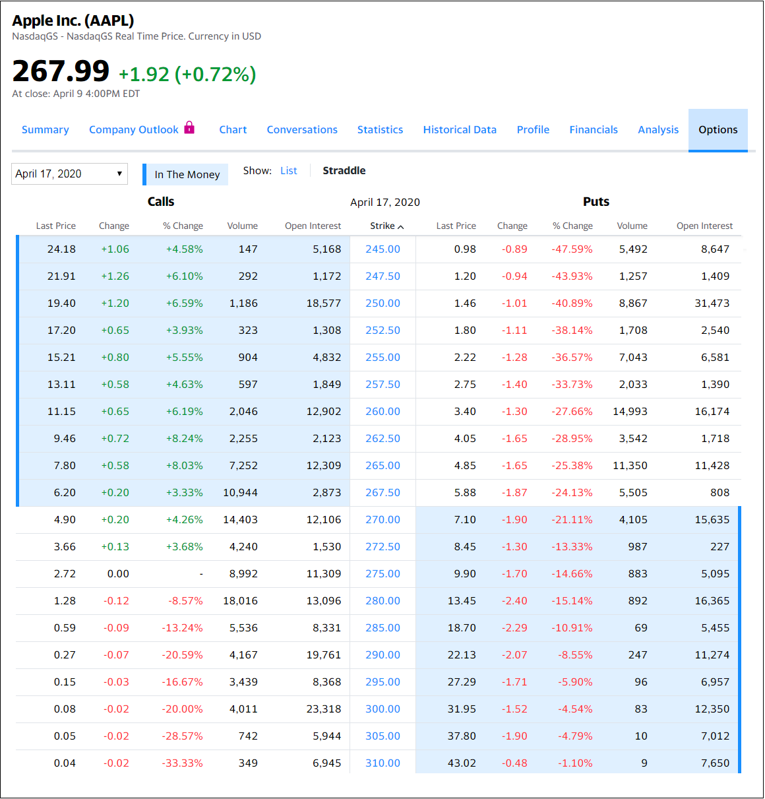

There are only two types of option contracts:
There are only two parties involved with option contracts:
Therefore, there are 4 total possibilities that a person can do with a single option contract:
-
Buy a PUT
-
Sell a PUT
-
Buy a CALL
-
Sell a CALL
Mastering the understanding of the four possibilities above is foundational to learning the many additional option strategies, such as spreads, iron condors, straddles, stranges, etc
(which are all done by combining multiple contracts together). Learning and using more option strategies is not
required to be successful (I mostly only sell puts and sell calls), but knowing the additional option strategies
once you understand the basics may allow for capitalizing on different market conditions when they arise.
Put Options
Never directly buy stock again, instead sell a put option contract. A put option allows the seller of the contract
to buy stock/etf at a discount! Therefore, selling a put option contract should be the first concept a new option trader should learn.
Each put option contract is for 100 shares of stock. When selling a put option contract,
the seller is agreeing to be a buyer of a specific stock (100 shares) at some (typically lower) price (referred to as the strike price)
at any time until the contract's expiration date. The buyer of the option contract pays the seller an initial amount of
money for the contract (referred to as premium).
A practical way to think about a put option contract is "stock price protection insurance".
The seller of the contract is like the insurance company offering the protection and the buyer of the contract has
100 shares of a specific stock that the buyer wants to protect/insure. The buyer will no longer lose money if the price
of the shares drops below the strike price because the seller will purchase the shares at that price. Just like
with home or auto insurance, the contract has an expiration date and the buyer pays a premium that the seller
(insurance company) keeps, even if the insurance is never used!
Example
Suppose Apple's current stock (AAPL) price is $100 per share and a put option seller is willing
to offer protection at $90 ($10 below the current price). Therefore, suppose he sells a put contract with a strike price at $90 that expires in 30 days. Further suppose the
premium collected for the contract is $2 per share. As a result, in this case one contract (100 shares) would result in a total premium of $200 ($2 x 100 shares).
(The total premium is deposited/credited (paid by the contract buyer) into the seller's account within a day of selling the contact.) The seller is required to have
$9000 ($90 x 100 shares) available in reserve while responsible for the contract in order to purchase the 100 shares (in the event the insurance is used,
which is referred to as the contract being exercised/assigned).
There are only two possible outcomes for the put option seller. They are:
-
The price of the stock stays above the strike price ($90) for the full life of the contract (30 days), therefore,
the insurance is not needed/used/exercised. The contract expires, and the seller earns $200 in total premium on a $9000 investment over a 30 day period
and is not required to buy the stock. (This is just like what happens to home or auto insurance contracts each period if a claim is never filed. You keep your house/car and
the insurance company keeps the premium you paid them. In this case, the put contract buyer keeps his 100 shares and the contract seller keeps the premium paid.)
-
The price of the stock drops below the strike price, $90 (i.e. $85) during the life of the contract (30 days).
The insurance is used/exercised. The put option contract seller is required to buy 100 shares at the strike price, $90, for a total cost of $9000.
However, because the seller received a $2 per share premium, the actual net price was $88 and net cost was $8800. As a result, if the current price
per share is $85, the seller now has an unrealized loss of $300, (8500 [Current market price] - 8800 [net cost] = -300). However, the loss is only realized if the shares are sold AND
CALL options contracts can be sold when owning stock that will allow additional premium to be collected (more on this later)
Outcome 1 - Price stayed above $90 strike:
Option Seller PROs
-
A $200 return on a $9000 investment over 30 days may not seem that great, but if done
consecutively 12 times, the total yearly return would be $2400 on a $9000 investment, resulting in an annualized rate of return (aror)
of 26.6%! At this rate, the investment doubles every 3 years and the $9000 investment would be worth $1 million after 20 years!
-
The option seller is able to make money if the stock goes up, stays the same, or even
goes down a little (at most 10% - staying above the $90 strike) because in all those cases the contract would never be used/exercised.
Option Seller CONs
-
Suppose, the stock makes a big move higher after selling the put option contract and now is worth $110 per share.
If the option seller would have simply bought the 100 shares instead, he would have been able to sell them for
a $1000 profit.
Outcome 2 - Price dropped below the $90 strike:
Option Seller PROs
-
The option seller has only a $300 loss after the stock price has dropped 15% in 30 days.
-
The option seller was able to buy the stock at a $12 (includes premium) discount compared to its price 30 days ago.
-
The option seller can sell a call option contract (see details below) and make additional premium.
-
The share price could rebound resulting in a quick profit for the option seller.
Option Seller CONs
-
If the share price drops dramatically, the option seller could experience a large loss.
(same risk for a passive, buy and hold investor)
-
The option seller must convert cash into stock, which results in more risk going forward
as the stock share value could continue to drop. (same risk for a passive, buy and hold investor)
Based on this reasoning, many people agree that being a seller of put option contracts (cash secured, not on margin) on stocks a person would like to own
is a safer/more conservative strategy than being a traditional buy and hold investor. This is why famous investors like Warren Buffet sells
billions of dollars worth of cash secured put option contracts, but for some reason the main stream media never talks about it....
Call Options
Never directly sell stock again, instead sell a call option contract. A call option contact allows the buyer
to purchase 100 shares of a stock/etf from the seller at a specified price (referred to as the strike price) at any time until
the contract's expiration date. Being a call option seller (often called a "covered call") is the safest option strategy for an existing investor that already
owns 100 shares of a stock/etf because the seller decides at what price to sell (the strike price). The buyer of the option contract pays the seller an initial amount of money so that the contract
(referred to as premium), in the hopes that the stock price will go beyond the strike price. If that happens, the contract
buyer can "buy low and sell high" for a profit. However, if that doesn't happen, the contract seller gets to keep
the premium and their 100 shares, allowing them to sell another call option and make more premium.
Example
Suppose a call option seller bought 100 shares of Apple stock (AAPL) at its current price of $100 per share and is willing to sell them at $105. Therefore, suppose he sells 1 call contract at the 105 strike that expires in 30 days and
receives $300 in premium.
There are only two possible outcomes for the call option seller, which are:
-
The price of the stock stays below the strike price ($105) for the full life of the contract (30 days).
The contract is not used and expires. The seller earns $300 from the 100 share investment over a 30 day period
and is not required to sell the stock.
-
The price of the stock rises above the strike price, $105 (i.e. $110) during the life of the contract (30 days).
The contract buyer exercises the contract, resulting in the 100 shares being "called away" (sold) from the seller at $105.
The contract seller has sold the 100 shares for $105 to the buyer and now simply has the total cash amount of $10800
($105 * 100 shares + $300 premium).
Outcome 1 - Price stays below $105 strike:
Option Seller PROs
-
The option seller with 100 shares can make additional money to increase his gains or decrease his losses.
Continuing this scenario 12 consecutive months would result in $3600 total premium collected for the year on a $10,000 investment.
That's a 36% annualized gain.
-
The option seller makes money and gets to keep the 100 shares.
-
If the stock pays a dividend, the seller will still be paid the dividend if the stock is still owned on the ex-dividend date.
Option Seller CONs
-
The option seller is required to do a little more work, therefore, cannot be a simple "buy and hold" passive investor.
Outcome 2 - Prices goes above $105 strike:
Option Seller PROs
-
The option seller has an exit strategy that forces them to sell. Many times investors
say they will sell when a stock gets to a certain price, but when it actually gets there, they wait to
see if it will go higher, which often times results in the price going back down. Having a call option takes
all the guess work out. If the seller is required to sell, then it should be at a price they are comfortable with
as they were the one who selected the strike (sell) price initially.
-
Because of the premium collected, the option seller is actually selling the shares for
an even greater price. If the strike is 105 and the premium collected was $300, then the sell price was actually
$108.
-
The option seller now owns cash, which can be allocated to another (possibly better) investment.
Option Seller CONs
-
The option seller must sell their stock and look for another investment.
-
The option seller will likely have to pay standard income tax on the gains at
tax time, unless the investment was held for a long duration or in an IRA.
Option contract prices are listed in a table called an "Option Chain".
Simply googling, "Option Chain", will return several well known finance sites that will
display an option chain table for a specified symbol (not all symbols have options).
For example, here is the option chain of AAPL via Yahoo Finance.

A few things to notice:
-
The current stock price is $267.99 per share.
-
The contract expiration date is April 17, 2020 (This can be changed via the dropdown in the upper left)
-
The strike prices are listed down the middle. Call prices on the left. Put prices on the right.
-
Put strikes that are above the current stock price are shaded blue as they are "In The Money". If you sold any contracts with strikes "in the money"
, it would result in you having to buy 100 shares of AAPL at expiration (may happen before expiration as well) at the strike price per share.
-
Call strikes that are below the current stock price are shaded blue as they are "In The Money". If you sold any contracts with strikes "in the money"
, it would result in you having to sell 100 shares of AAPL at expiration (may happen before expiration as well) at the strike price per share.
-
Example 1
-
Type: PUT (right side of image) - selling a put contract means you will BUY 100 shares of the symbol (AAPL) at the strike price.
-
Strike: 245.00 (first row) - willing to purchase 100 shares of AAPL at 245.00 per share ($24,500 total)
-
Last Price: 0.98 - the value of the most recent put option contract (just under $1 per share). Because the contract represents 100 shares, the contract's most recent value was $98.00. Therefore, selling this contract would result in the seller receiving a $98 credit.
-
Change / Change %: -0.89 / -47.59% - The change in the contract value from the previous market close value. In this case, the value of the contract is down almost 50%.
-
Volume: 5,492 - The number of contracts traded so far for the current market day.
-
Open Interest: 8,647 - The total number contracts that exist (are open) for the strike price prior to the current market day.
In this example, a seller of this contract would be willing to buy 100 shares of AAPL at $245 per share from now (April 9, 2020) until expiration (April 17, 2020). The compensation for taking on this obligation/risk, the seller receives $98 in credit/premium. In order words, the seller is receives $98 for a $24,500 investment for a week.
The absolute return is only 0.04%, which may not sound like very much, but this is for a week, so annualized, this is over a 20% return.
Furthermore, the strike price is $23 from the current price, which is about 8.5%. After including the additional $98 from the sale of the contract, the seller's break even is actually 244.02, which is 8.9% from the current stock price. This means the seller only begins losing money if the stock price drops over 8.9% in the next week.
-
Example 2
-
Type: CALL (left side of image) - selling a call contract means you will SELL 100 shares of the symbol (AAPL) at the strike price. Therefore, it is recommended to own 100 shares before selling a call option contract.
-
Strike: 270.00 (middle row) - willing to sell 100 shares of AAPL at 270.00 per share.
-
Last Price: 4.90 - the value of the most recent put option contract (just under $4.90 per share). Because the contract represents 100 shares, the contract's most recent value was $490 (100 * $4.90). Therefore, selling this contract would result in the seller receiving a $490 credit.
-
Change / Change %: +0.20 / +4.26% - The change in the contract value from the previous market close value. In this case, the value of the contract is up almost 5%.
-
Volume: 14,403 - The number of contracts traded so far for the current market day.
-
Open Interest: 12,106 - The total number contracts that exist (are open) for the strike price prior to the current market day.
In this example, a seller of this contract would be willing to sell 100 shares of AAPL at $270 per share from now (April 9, 2020) until expiration (April 17, 2020). Therefore, suppose I bought 100 shares of AAPL at the market price shown (267.99) and then I sold a 270 call option.
for $490. Now suppose AAPL gets to above 270, such as 275, then I would get my 100 shares of AAPL sold (exercised / called away) for $270 a share even though the market price is now $275. However, besides the $490 premium collected from selling the call contract, I would receive $2.01 per share for buying at 267.99 and selling at 270 ($201) for a total of $691.
So even though, I officially, sold my 100 shares at 270, my total profit would be similar to selling for 274.90, which is only $0.10 from current market price.
Another thing to point out is, by selling the 270 strike call contract for $490 and IF I end up not having to sell my 100 shares, then I get to keep the 100 shares and the $490, which can be thought of as buying the AAPL shares for 263.09 ($4.90 less than my initial cost).